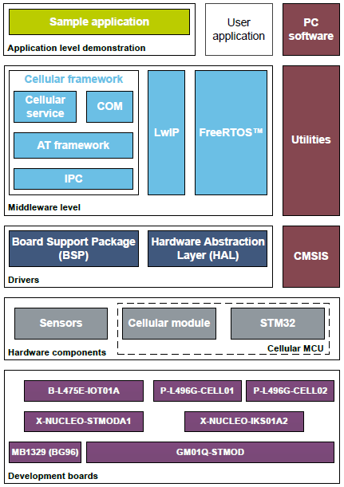

Release Notes for Cellular Framework 3.0.0
Copyright 2019 STMicroelectronics
License
Licensed under License SLA004 (the "License"). You may not use this package except in compliance with the License. You may obtain a copy of the License at:
Purpose
the Cellular Framework is the SW stack that allow to drive cellular modem from STM32 MCU

3.0.0 / W1907
Main changes
Maintenance release and product update
This V3.0.0 delivery is a new release with new features and new HW support
| Headline |
|---|
| New HW supported : Sequans GM01Q-STMOD modem board used on ST host boards: Disco L496 and Disco L475 IoT node |
| UDP client in modem socket mode |
| Echo client application added |
| Boot menu improvements |
| Username/Password management in APN |
| Automatic SIM switching |
| Bug correction regarding previous version (see tickets below) |
| BG96 FW used is 02A07 (it can be seen in console at boot) if not, it must be updated. to flash a new modem FW (see https://stm32-c2c.com binaries) |
| Ticket | Headline |
|---|---|
| 59374 | [Licenses update]: in STM32 X-Cube package |
| 57975 | BG96 Modem socket UDP Client |
| 57974 | UG96 Modem socket UDP Client |
| 57967 | Embedded SIM access for 2G Fallback not possible |
| 57136 | Missing extra test at ATCustom_BG96_extractElement |
| 57049 | MISRAC2012 unjustified violations in v2.0 to correct (partially corrected some will be in next release) |
| 56976 | In line help for command line & menu |
Contents
| Name | Version | Release note |
|---|---|---|
| Drivers: Cellular framework | V3.0.0 | |
| Application: HTTP client (Grovestreams) | ||
| Application: PING client | ||
| Application: Echo client |
Contents
| What | Flash (in bytes) | RAM (in bytes) |
|---|---|---|
| Disco L496 - BG96 - LwIP - with trace | 206985 | 89767 |
| Disco L496 - BG96 - LwIP - without trace | 150577 | 89747 |
| Disco L496 - BG96 - Modem socket - with trace | 158391 | 46836 |
| Disco L496 - BG96 - Modem socket - without trace | 92961 | 46832 |
| Disco L496 - UG96 - LwIP - with trace | 193013 | 89512 |
| Disco L496 - UG96 - LwIP - without trace | 141449 | 89492 |
| Disco L496 - UG96 - Modem socket - with trace | 144315 | 46579 |
| Disco L496 - UG96 - Modem socket - without trace | 83817 | 46575 |
| Disco IoT node - BG96 - Modem socket - with trace | 154095 | 45260 |
| Disco IoT node - BG96 - Modem socket - without trace | 89691 | 45256 |
| Disco IoT node - GM01Q - Modem socket - with trace | 133551 | 44977 |
| Disco IoT node - GM01Q - Modem socket - without trace | 77901 | 44973 |
| Disco L496 - GM01Q - LwIP - with trace | 188381 | 89488 |
| Disco L496 - GM01Q - LwIP - without trace | 139585 | 89468 |
| Disco L496 - GM01Q - Modem socket - with trace | 136367 | 46553 |
| Disco L496 - GM01Q - Modem socket - without trace | 80713 | 46549 |
Known limitations
| Ticket | Headline |
|---|---|
| 52037 | UG96 connect failure in LwIP, mpossible to debug through USB |
| 59232 | Throughput is low in modem socket regarding LwIP |
| 59233 | During throughput tests errors detected in modem socket (ok in LwIP) |
| 60018 | Traces are sometime lost |
| 60050 | Suspend/Resume (LwIP mode) must be ok for Low Power feature |
| 61044 | Type compatibility with FreeRtos for TOTAL_HEAP_SIZE memory in the x-cube-cellular |
| 61077 | Implement modem UART error callback Defect |
| 61202 | IPC timer expires when sending data with any timer option previously set (blocking socket) |
| 61213 | Modem from time to time detach from the Network even if RSRQ is good |
| 61437 | Error in storage Flash for menu config with ide SW4STM32 |
| Interfaces com_send, com_sendto or com_recv, com_recvfrom; even if application use MSG_DONTWAIT, application can be blocked on Mutex pre-emption if a command is already in progress at AT level. | |
| Only one PING at a time | |
| AN that explains how to port the SW on a new HW | |
| AN that explains how to support a new modem | |
| In LwIP switch between data / command mode (Signal strength not currently reported in LwIP during data transfert) | |
| Low Power in STM32 and Modem (PSM, eDRX feature) | |
| New HW support : Murata Type 1 SE | |
| Modem socket for TCP/UDP server | |
| UDP in not-connected mode is not yet supported by Sequans modem | |
| Due to Ping implementation in Sequans modem, first Ping result (out of a sequence of 10) is always nok |
Supported Devices and boards
- P-L496G-CELL01
- P-L496G-CELL02
- X-NUCLEO-IKS01A2
- B-L475-IOT01A
- X-NUCLEAO-STMODA1
- MB1329B(Quectel BG96 modem on STMod+ board)
- 32L496GDISCOVERY
- GM01Q-STMOD (Sequans GM01Q modem on STMod+ board)
Backward compatibility
Compliant with previous deliveries, BG96 modem FW must be updated to V7
Dependencies
This software release is compatible with: see Package (top) Release Note
Update History
2.0.0 / W1845
Main changes
Maintenance release and product update
This V2.0.0 delivery is a new release with new features and new HW support
| Headline |
|---|
| New HW supported : Disco L475 IoT Node (only BG96 and modem socket mode) with embedded sensors management |
| IAR, Keil, SW4STM32 for all HW (fully tested) and Truestudio (Only basic tests) for Disco IoT node |
| Possibility to send commands (Ping, network status, modem configuration ...) through console (flexible and many commands available) |
| Possibility to test the troughput and the latency |
| Boot menu improvements |
| MISRA 2012 compliant |
| Bug correction regarding previous version (see tickets below) |
| BG96 FW used is 02A07 (it can be seen in console at boot) it is possible to flash a new modem FW (see https://stm32-c2c.com/sim/boards/515/binaries) |
| Ticket | Headline |
|---|---|
| 41217 | CGDCONT management with modem BG96 |
| 42459 | Datacache callback issue |
| 44814 | Use sysctrl to select SIM at boot |
| 44817 | Change RSSI with a value in dB or dBm |
| 44818 | Add IP address to PING from boot menu |
| 44819 | Add in boot menu the debug level |
| 45145 | modem setting at boot |
| 45214 | 1- Back off timer due to Network : Wrong APN in TS 34. TS.34_4.0_REQ_011 : TS35_5.1_TC_008d |
| 45215 | 2- Back off timer due to Network Unreachable as defined in TS 34. TS.34_4.0_REQ_011 : TS35_5.1_TC_008g |
| 51231 | useless inclusion (main.h) in FreeRTOSConfig.h triggering compilation error in the project export |
| 51566 | Free RTOS test task / will you develop or simply remove the definition ? |
| 51568 | Free RTOS default task : include for button under compilation switch |
| 51636 | HTTP client compilation failure without MEMS |
| 51719 | Sync on latest HAL CMSIS etc ... version |
| 51720 | Delete clone Git repository and use official ones |
| 51923 | Automatic SIM selection at boot |
| 52039 | Stop using user button in the SW (Cde in TeraTerm instead) |
| 52040 | Add method that allow to display current throughput |
| 52041 | Support Disco IoT node HW in X-CUBE-CELLULAR |
| 52042 | Select M1 and/or NBIoT modem bands in boot menu |
| 52475 | new API to set its own credentials and preferences (APN, ...) |
| 52555 | Add the ICCID (international SIM id) for the user application |
| 52566 | wording on DC_COM_RADIO_LTE |
| 52642 | IP@ is not notified from cellular in « socket modem » configuration |
| 53266 | Equipment information (modem) for the applicative layer |
| 53522 | Update Setup menu version |
| 53847 | PPPOSIF_CONFIG_TIMEOUT_VALUE too short |
| 54008 | clean up of Hw config file |
| 54287 | Running without Hw Flow Control |
| 54487 | IMSI trace (typo) |
| 54616 | APN length to 32 |
| 54822 | Add embedded sensor support for Disco IoT Node board |
Contents
| Name | Version | Release note |
|---|---|---|
| Drivers: Cellular framework | V2.0.0 | |
| Application: HTTP Client (Grovestreams) | ||
| Application: PING |
Contents
| What | Flash (in bytes) | RAM (in bytes) |
|---|---|---|
| Disco L496 - BG96 - LwIP - with trace | 192050 | 85579 |
| Disco L496 - BG96 - LwIP - without trace | 135340 | 85559 |
| Disco L496 - BG96 - Modem socket - with trace | 138700 | 42648 |
| Disco L496 - BG96 - Modem socket - without trace | 75726 | 42644 |
| Disco L496 - UG96 - LwIP - with trace | 180214 | 85336 |
| Disco L496 - UG96 - LwIP - without trace | 127256 | 85316 |
| Disco L496 - UG96 - Modem socket - with trace | 126740 | 42407 |
| Disco L496 - UG96 - Modem socket - without trace | 67514 | 42403 |
| Disco IoT node - BG96 - Modem socket - with trace | 135932 | 42488 |
| Disco IoT node - BG96 - Modem socket - without trace | 72936 | 42484 |
Known limitations
| Ticket | Headline |
|---|---|
| 44827 | Remove label remap because of new ioc |
| 51931 | Add API to switch off the device |
| 53765 | No more data received from socket API triggering a Would block for blocking socket |
| 44810 | Modem socket full feature |
| 44826 | Activate RING indicator |
| 45354 | Create a dedicated service to management LED network access |
| 51074 | Utilities, cellular portability |
| 51680 | LED1 usage in the cellular |
| 52037 | UG96 connect failure in LwIP, impossible to debug through USB |
| 52131 | Trace AT commands by printf |
| 52806 | Username/Password support for cellular data |
| 54023 | what about project config file (which is empty) ? |
| 54544 | cellular deinitialization |
| Interfaces com_send or com_recv; even if application use MSG_DONTWAIT, application can be blocked on Mutex pre-emption if a command is already in progress at AT level. | |
| Interrupts loss may occur when HW flow controls not activated (by default activated) | |
| Only one PING at a time | |
| Not possible to set Username / Password for PDP context (except in source and then rebuild) | |
| AN that explains how to port the SW on a new HW | |
| In LwIP switch between data / command mode (Signal strength not currently reported in LwIP during data transfert) | |
| Low Power in STM32 and Modem (PSM, eDRX feature) | |
| New HW support |
Supported Devices and boards
- P-L496G-CELL01
- P-L496G-CELL02
- X-NUCLEO-IKS01A2
- B-L475-IOT01A
- X-NUCLEAO-STMODA1
- MB1329B(BG96)
Backward compatibility
Compliant with previous deliveries
Dependencies
This software release is compatible with: see Package (top) Release Note
V1.1.1 / W1832
Main changes
Patch release
Bug fixing of V1.1.0
Contents
- This is not a full delivery but only a patch (overwrite 1.1.0 files)
- Fixed bugs and improvements list:
- 51056 Assertion raised link to access of LwIP seg/buf/pcb
- 51649 IN LwIP DNS reported value is 0.0.0.0
- 51529 Remove date information in setup menu
- 50387 Impossible to reconnect in LwIP after brutal close by the remote
- Note, 50387 was not listed in V1.1.0 but already corrected, so listed here
- Only a reduced test plan has been run for this patch delivery
Known limitations
- Change Request for next releases:
- None
- Restrictions:
- Interfaces com_send or com_recv; even if application use MSG_DONTWAIT, application can be blocked on Mutex pre-emption if a command is already in progress at AT level.
- Interrupts loss may occur when HW flow controls not activated (by default activated)
- Only one PING at a time.
- For COM API, additional restrictions are described in file com_sockets_ip_modem.h
- Bugs:
- No known bug
- Information:
- SW is delivered with the trace activated.
Same as previous version
Supported Devices and boards
Same as previous version
Backward compatibility
Same as previous version
Dependencies
Same as previous version
V1.1.0 / W1829
Main changes
Patch release
Improvement & bug fixing of V1.0.0
Contents
- Fixed bugs and improvements list:
- 44813 : CID = 0 management
- 50329 : The SW is blocked when ping in LwIP mode
- 50330 : Float with SW4STM32
- 50331 : Warning when Stack Analysis activated
- 50333 : MDK / Keil : link fails when LwIP is not used
- 50334 : No menu when trace deactivated
- 50335 : Display ping result even if trace is deactivated
- 50336 : Stack Analysis called twice by Data Cache
- 50338 : Multi socket does not work
- 50340 : Embeded SIM selection not possible
- 50341 : Display correct version & date in the boot log
- 50378 : At boot UART IRQ failed because IPC not yet initialized
- 50380 : LwIP timer to maintain socket before deleting is too long
- Better integration of SW4STM32 and MDK IDEs
- Upgraded test plan
Known limitations
- Change Request for next releases:
- In modem socket mode (IP stack used is in the modem) only TCP client is available (i.e. TCP server and UDP (client & server) are not yet available).
- In modem socket only IPv4 is supported.
- In LwIP mode only IPv4 has been tested (IPV6 is supported).
- For modem DFOTA, STM32 board must be started with option 2 (modem boot) before using USB of modem board to start the DFOTA
- To modify PIN code a recompile is needed. In case of usage be careful to put the correct PIN, if not SIM card can be blocked
- PING address is hardcoded so recompile is needed to change the ping server address
- In current implementation, when the com_socket_send() function returns successfully, it does not mean that data has been sent to the remote device nor acknowledged by the remote. It simply means that data has been pushed to the Modem buffer but will be sent at first opportunity.
- Restrictions:
- Interfaces com_send or com_recv; even if application use MSG_DONTWAIT, application can be blocked on Mutex pre-emption if a command is already in progress at AT level.
- Interrupts loss may occur when HW flow controls not activated (by default activated)
- Only one PING at a time.
- For COM API, additional restrictions are described in file com_sockets_ip_modem.h
- Bugs:
- In LwIP mode when connection is lost with server, next connection is always refused. So usage of LwIP mode can be altered regarding the quality of the connection.
- Information:
- SW is delivered with the trace activated.
Supported Devices and boards
Same as previous version
Backward compatibility
NA
Dependencies
NA
V1.0.0 / W1826
Main changes
First release
Original delivery
Contents
First Cellular framework
Known limitations
- In modem socket mode (IP stack used is in the modem) only TCP client is available (i.e. TCP server and UDP (client & server) are not yet available.
- Only IPv4 is supported on modem socket and on LwIP mode only IPv4 has been tested.
- When compiling in MDK-ARM compiler in Modem socket mode, some folders need to be removed from the build (Note that, it is not necessary for other ones). In plf_feature.h, use define USE_SOCKETS_MODEM for USE_SOCKETS_TYPE. Folders to be remove from build Middleware/Net/LwIP/api, LwIP/netif/ppp, LwIP/core, LwIP/core/ipv4, LwIP/system/OS
- For modem DFOTA, STM32 board must be started with option 2 (modem boot) before using USB of modem board
- To modify PIN code a recompile is needed. In case of usage be careful to put the correct PIN, if not SIM card can be blocked
- PING address is hardcoded so recompile is needed to change the ping server address
- Only one PING at a time.
- SW is delivered with the trace activated
- Interfaces com_send or com_recv; even if application use MSG_DONTWAIT, application can be blocked on Mutex pre-emption if a command is already in progress at AT level.
- Interrupts loss may occur when HW flow controls not activated (by default activated)
- In current implementation, when the com_socket_send() function returns successfully, it does not mean that data has been sent to the remote device nor acknowledged by the remote. It simply means that data has been pushed to the Modem buffer but will be sent at first opportunity.
- COM additional restrictions are described in file com_sockets_ip_modem.h
Supported Devices and boards
- P-L496G-CELL01
- P-L496G-CELL02
- X-NUCLEO-IKS01A2
Backward compatibility
NA
Dependencies
NA